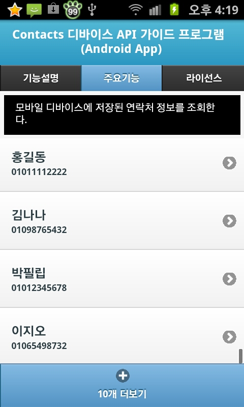
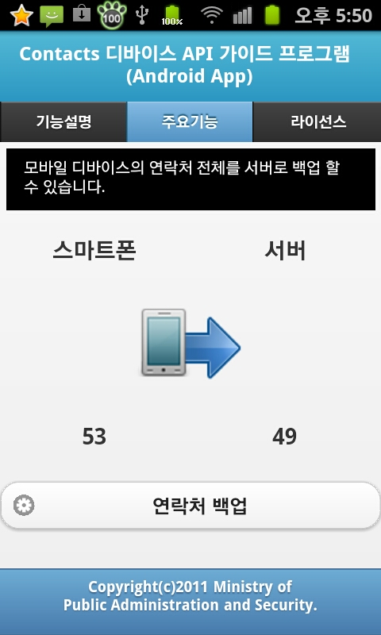

모바일 Contacts 디바이스 API 가이드
설명
행정안전부 전자정부 표준프레임워크 센터에서는 전자정부 표준프레임워크를 이용하여 하이브리드 앱 개발 을 할 수 있는 모바일 디바이스 API 실행환경, 개발환경, 가이드프로그램을 제작 배포하고 있습니다.
Contacts API 가이드 프로그램은 디바이스 기기 내 연락처를 조회하여 연락처를 컨트롤 하는 기능을 구현하는 데 참고 및 활용 할 수 있는 가이드 앱 입니다.
기능사양
- 적용 오픈 소스
Cordova v8.1.2, jQuery Mobile 1.4.5, jQuery 2.1.4, eGovMoible 1.4.6, iScroll5, three.js - 적용 라이브러리
android.jar, annotation.jar, spring-android-rest-template-1.0.1.RELEASE.jar, spring-android-core-1.0.1.RELEASE.jar - 운영 플랫폼
Android SDK Revision 23 이상, 전자정부 표준프레임워크 3.9 - 개발환경
전자정부 표준프레임워크 개발환경 3.9 - 적용 디바이스 API
- Cordova : Contacts Device API, Device Device API, Connection Device API
- 전자정부표준프레임워크 : Interface Device API
기능설명
- 모바일 기기 연락처 조회 : Contacts API 기능을 이용하여 모바일 디바이스의 연락처를 조회 합니다.
- 연락처를 서버로 백업하기 : Contacts API 기능을 이용하여 조회된 연락처를 서버로 백업 합니다.
- 연락처를 기기로 복구하기 : Contacts API 기능을 이용하여 서버에 백업된 연락처를 조회하여 모바일 디바이스로 복구 합니다.
애플리케이션 캡처화면

- 

- 